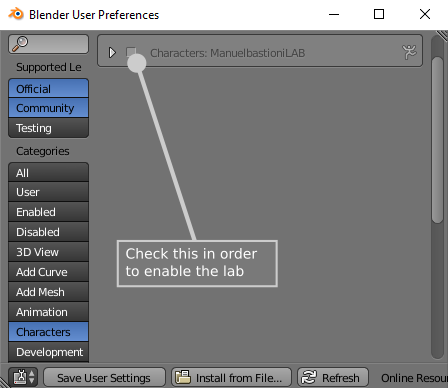
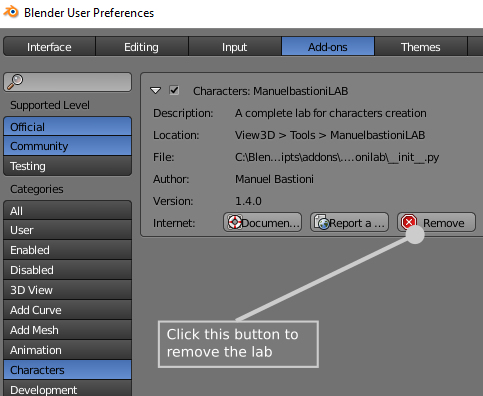

Requirements
"ManuelbastioniLAB" is an addon for Blender, written in Python. It only requires Blender 2.78 or 2.79. It runs on any operating system supported by Blender: Windows, OSX, Linux, etc.
Blender is a powerful, free and open source software for 3d modelling. Please download latest version from www.blender.org
Installation
In case you are going to upgrade ManuelbastioniLAB, is highly recommended to remove the previous version, as explained in the paragraph Unistall ManuelbastioniLAB.
Also, you can upgrade the characters created with old versions of the lab using the import feature, as described here.
Install ManuelbastioniLAB
Step 1
In Blender, open the user preferences window, choosing File → User Preferences

Step 2
Press the "Install from File" button in the left bottom side of the window

Step 3
Use the file selector window in order to find the zip file downloaded from the official site www.manuelbastioni.com, select it and click the button "Install from File".

Step 4
When the installation will be completed, a new category named "Characters" will appear in the Categories list. Select it and enable the lab using the check button.

When the plugin is enabled, remember to press the button "Save User Settings", in order to load the lab automatically each time you start Blender.

IMPORTANT: It's needed to restart Blender after the installation!
Unistall ManuelbastioniLAB
In Blender, open the user preferences window, choosing File → User Preferences
In the addons tab, look for Characters → ManuelbastioniLAB
Click on "Remove" button, as illustrated below.
